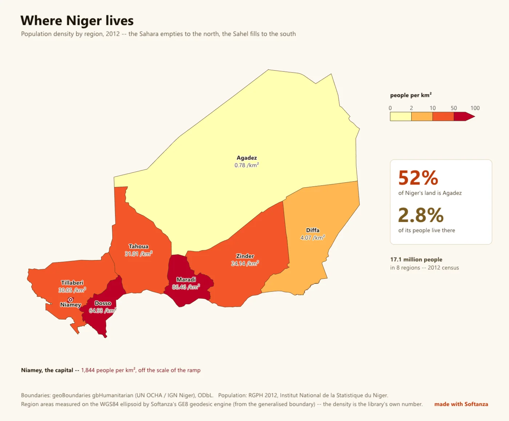

Geo & cartography
A map engine that also does the geodesy and the spatial statistics; GIS plumbing is the frontier.
5 Strong · 2 Solid · 4 Partial · 1 Emerging
Measured against: D3-geo · GDAL · PostGIS · Cartopy · Folders: base/geo · The guide to this area's functions

Rethought from first principles
What Softanza kept from what works, and what it rethought, as the library wrote it down in its design documents and narrations.
The Softanza wayA map makes claims about the world, so it must say how it was made and assert nothing it cannot check.
Kept from the best practice
- Every map passes through one pipeline borrowed from d3-geo (rotate, cut on the sphere, project, resample, clip), so no picture can skip these steps. source
- Labels follow four rules shared by QGIS, Mapbox and ArcGIS: a label is a box, big regions speak first, a name that will not fit goes outside, or is dropped. source
- Colour ramps are Cynthia Brewer's ColorBrewer schemes, written out as data rather than computed, because a computed ramp is one nobody checked. source
Rethought
- No border data ships with the library. A boundary file takes sides on disputed borders, ages silently and carries a licence, so callers bring or fetch their own. source
- A map judges its own argument. Colouring regions by value on a projection that swells areas is reported as an error, because the colour then misstates the quantity. source
- A scale bar is drawn at a stated latitude, and refused when scale varies too much across the sheet, because a bar true along one line misleads everywhere else. source
- Place names are matched without fuzzy guessing. A near miss is reported, never coloured, because a map that paints Niger for Nigeria is worse than one with a hole. source
A genuine standout: 44 self-inverting projections, full WGS84 geodesy, and a spatstat-class spatial-statistics engine ship together behind Haro faces, guarded by ~400 assertions and 72 negative controls. It is the rare library where the tool that draws the map also computes the statistics it shows and measures its own distortion — analysis-and-cartography strong, GIS-plumbing light.
What a maker does with it, and what stands out
- 44 self-inverting projections with a solver that refuses a bad inverse
- the tool that draws the map also computes the statistics and measures its own distortion
- ordinary kriging with its variance surface
- the Niger real-data map, vendor-free end to end
What is owed
- vector geometry overlay algebra
- source-CRS reprojection
- a GeoJSON / TopoJSON writer
- raster / DEM & GeoTIFF
The Softanza way, run
What Softanza does differently in this area, shown by code taken from its narrations and guards, and run for this page.
A map coloured by value on Mercator reports itself as an error, because the colour then speaks for areas the projection has swollen.
# the guard's fixture: two countries, in the caller's own file
oF = StzGeoFeaturesFromJson(read("../graphics/fixtures/two_countries.geojson"))
oBad = StzGeoMap(new stzGeoProjection(:Mercator), oF)
oBad.SetValuesQ([ 4200, 99999 ]).SetClasses([ 0, 5000, 20000, 30000 ])
aBad = oBad.Findings()
chk("A CHOROPLETH ON A PROJECTION THAT DISTORTS AREA IS AN ERROR -- it encodes " +
"a quantity as the colour of an area, so the picture argues against its own legend",
_HasRule(aBad, "choropleth_needs_an_equal_area_projection", "error"))ok A CHOROPLETH ON A PROJECTION THAT DISTORTS AREA IS AN ERROR -- it encodes a quantity as the colour of an area, so the picture argues against its own legend
run on 2026-10-01 21:20 inside the library at commit 0e72e2e2c; taken from base/test/graphics/geo_map_narrated.ring
A table typed by a person binds to the caller's own shapes; a name that matches nothing, here Atlantis, is reported back and never guessed.
# the guard's fixture: two countries, in the caller's own file
oF = StzGeoFeaturesFromJson(read("../graphics/fixtures/two_countries.geojson"))
oAt = StzGeoAtlas(oF)
aRows = [ [ "Arda", 10 ], [ "berea", 20 ], [ "Atlantis", 30 ] ]
aV = oAt.ValuesFor(aRows)
chk("A TABLE OF ROWS BECOMES ONE VALUE PER FEATURE, in the features' own order, " +
"which is what the map takes",
len(aV) = 2 and aV[1] = 10 and aV[2] = 20)
chk("...and what did not bind is ANSWERED rather than swallowed",
len(oAt.Unresolved(aRows)) = 1 and oAt.Unresolved(aRows)[1] = "Atlantis")ok A TABLE OF ROWS BECOMES ONE VALUE PER FEATURE, in the features' own order, which is what the map takes ok ...and what did not bind is ANSWERED rather than swallowed
run on 2026-10-01 21:20 inside the library at commit 0e72e2e2c; taken from base/test/graphics/geo_map_narrated.ring
Asked to draw a scale bar on a world Mercator map, the map declines and answers 0, because no single bar is true across that sheet.
# the guard's fixture: one square, on a world Mercator map
oSq = StzGeoFeaturesFromJson(_FSquare())
oMe = StzGeoMap(new stzGeoProjection(:Mercator), oSq)
oMe.Projection().FitToSphere(900, 900, 4)
oC1 = new stzCanvas(600, 300)
oC1.SetBackground("#FFFFFF")
oFont = new stzFont("../gpu/fixtures/amiri_arabic_subset.ttf") # a font the library commits
nDrew = oMe.DrawScaleBarOn(oC1, oFont, 12, 40, 200, 140, 0, "#333333")
? " drawing a bar on a world Mercator returned " + nDrewdrawing a bar on a world Mercator returned 0
run on 2026-10-01 21:20 inside the library at commit 0e72e2e2c; taken from base/test/graphics/geo_furniture_narrated.ring
The lanes, one by one
Lanes and their notes are quoted as they were read at the source, on Read from the source on 2026-09-16, from a read-only main worktree (HEAD 04cff1c34).